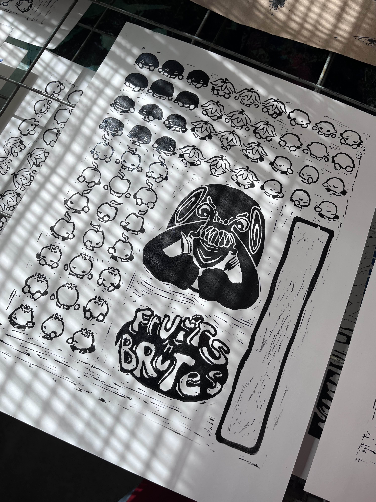
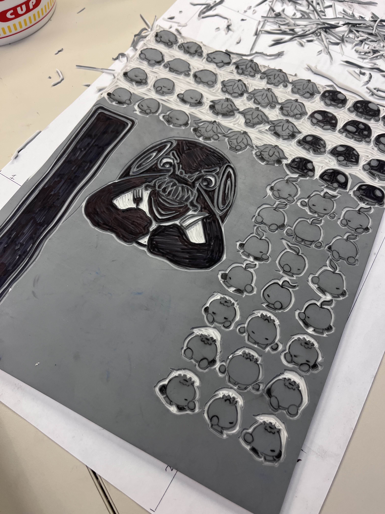

CLICK TO LOAD GAME
Fruits 'n Brutes is a turn based strategy RPG game where you control a ragtag team of four fruits that have assembled together to defeat the starving King Snail and his army of evil mushrooms.
Each turn, the player takes an action. After performing an action, the party order is rotated. After rotating, enemies will perform their action. Once all enemies are defeated, you can select two party members to have a dialogue. Selecting party members will strengthen their bond, increasing their stats when next to each other in the party lineup. During the dialogue, selecting the best dialogue option will strengthen their bond even further.
The logo, fruit sprites, mushroom sprites, and King Snail sprite were drawn by Chloe Parker and printed with a letterpress! And the voices of each character were voiced and synthesized by William Parker!
Images from the printmaking process:
 Credits:
- William Parker (Programming, Design, Audio, Dialogue)
- Chloe Parker (Art, Dialogue, Story, Design)
- William Parker (Programming)
- Zane Little (Music)
- ArMM1998 (Tile Sprites)
- Tiny Worlds (Font)
- Someoneman (Heal SFX)
- Little Robot Sound Factory (Explosion SFX)
- faxcorp (Stun SFX)
- Blender Foundation (Ambient Sounds and Foot Steps SFX)
- Kenney.nl (Positive and Negative Feedback SFX)
- Lorc (Command, Attack, Bomb, and Detonate Icons)
- Zeromancer (Heal Icon)
- sbed (Shock Icon)
- Guard13007 (Move Icon)
- Delapouite (Swap Icon)
- Puppetbomb (Dialogue Background Art)